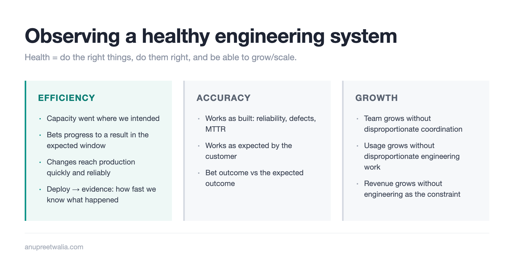
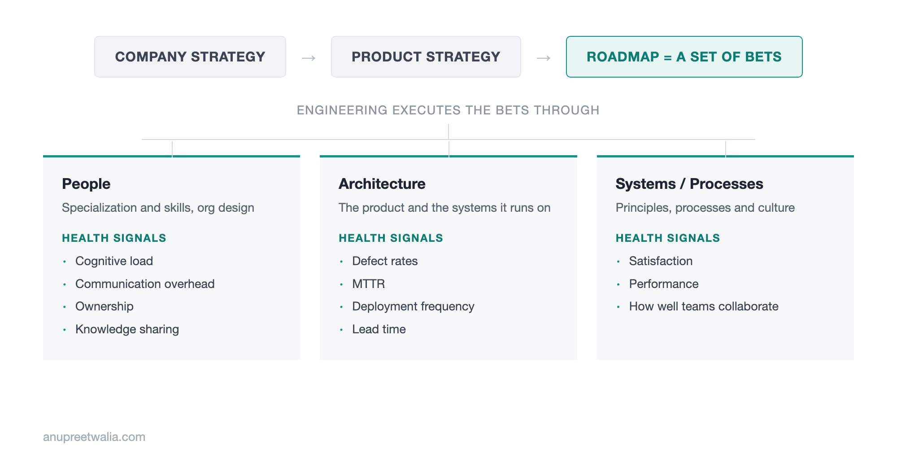

[WIP] Observing a Healthy Engineering System
A model for the engineering system — People, Architecture and Systems/Processes executing roadmap bets — and three properties to observe it by: Efficiency, Accuracy and Growth.

As engineering leaders, we track a lot of metrics. Deployment frequency, lead time, defects, uptime, MTTR, roadmap delivery, customer bugs, team health, etc.
Most of these are easy to collect. On their own, they don't tell us whether the engineering system is healthy.
I use a simple model for the engineering system.
Company strategy informs Product strategy. Product strategy gets expressed as a roadmap, which is a set of bets about where we should invest. Engineering executes those bets through three things: People, Architecture and Systems/Processes.
Each of these has its own health signals.
For People, I care about things like cognitive load, communication overhead, ownership and knowledge sharing.
For Architecture, I care about defect rates, MTTR, deployment frequency and lead time.
For Systems/Processes, I care about satisfaction, performance and how well teams collaborate.

These tell me whether different parts of the system are operating well. They don't tell me whether the system as a whole is producing what we need from it.
For that, I look for three properties: Efficiency, Accuracy and Growth.
Efficiency
An efficient engineering system spends its capacity where we intended, executes its bets predictably and gets to evidence quickly.
The first thing I want to know is where the capacity went.
If the company strategy requires us to invest in Growth and Moat, but most of the engineering capacity is going into Floor and Gate work, the engineering organization may be executing well while still not executing the strategy.
This can be as simple as looking at planned vs actual allocation across the roadmap bets.
The second is predictability of the bets.
Roadmap commit vs delivered has historically been a useful measure here, but delivery is no longer the complete boundary. In From Delivery to Learning, I expanded the dev loop from:
hypothesis → specification → build → test → deploy
to:
hypothesis → specification → build → test → deploy → observe → learn → iterate
So predictability needs to account for the bet, not just the feature. Did the bets we committed to progress to a result in the window we expected?
This doesn't mean the original scope needs to ship unchanged. A bet can change or stop because we learned something and still have moved through the system successfully.
DORA continues to measure an important part of this cycle. Deployment frequency, lead time and the stability of the delivery system tell us whether we can get changes into production efficiently.
I would add another clock after deployment:
deploy → evidence
Once the feature is in production, how long does it take us to know what happened?
If implementation gets 10x faster but a feature sits in production for six weeks before we know whether the customer can use it, the bottleneck moved. Measuring deploy → evidence makes that part of the loop visible.
So for Efficiency I want to observe:
| Measure | What I am looking for |
|---|---|
| Capacity allocation | Did engineering capacity go where we intended? |
| Bet predictability | Did the bets progress to a result in the expected window? |
| Delivery | Can we get changes into production quickly and reliably? |
| Deploy → evidence | How quickly do we know what happened after deployment? |
Accuracy
Efficiency tells us how well work moves through the system. We also need to know whether we are doing the work right.
There are two kinds of correctness here.
It works as built.
The software behaves the way we specified. It is available, reliable and doesn't generate an unreasonable number of defects. SLA/uptime, defect rates, MTTR and other reliability measures give us this view.
It works as expected by the customer.
A feature can have 99.99% uptime, no bugs and still not work for the customer.
The customer may not be able to discover it. The workflow may not make sense. They may not be able to complete the job we expected them to complete. Or they may use it correctly and still not get the value in the original hypothesis.
This is where Product NPS, customer-reported issues and the expected outcome of the bet come in.
The distinction also matters when a bet fails.
Say we made a Gate bet because five customers told us they needed a capability. We built it correctly, all five could use it as intended, and none of them ended up needing it.
The bet was wrong. The engineering system wasn't necessarily inaccurate.
Now take the same feature, but the customers want it and can't complete the workflow because the UX prevents them from doing so. The software may technically work as built, but it isn't working as expected by the customer.
Both views belong in Accuracy.
| Measure | What I am looking for |
|---|---|
| Reliability / SLA | Does it work as built? |
| Defects / MTTR | How often does it break and how quickly do we recover? |
| Customer-reported issues | Where does the customer's experience differ from what we built? |
| Bet outcome vs expected outcome | Did the customer get the result the hypothesis expected? |
Growth
A healthy engineering system also needs organic, easy paths to scale.
I look at scale across three surfaces: team, usage and revenue.
For the team, can we add people without communication and coordination overhead growing faster than the team? Can a new engineer become productive without needing to understand the entire system? Do ownership boundaries continue to work as the organization grows?
For usage, can the system handle the growth we expect? That could be users, transactions, API calls, workloads or whatever represents scale for the product.
For revenue, can the product support the next level of commercial growth without engineering becoming the constraint? If every new revenue tier, customer segment or large customer requires bespoke engineering work, revenue can be growing while the engineering system itself isn't scaling.
I compare these against what we planned for.
If we planned for 2x transactions and achieved 2x transactions, that alone doesn't tell me the system scaled well. If getting there required three months of emergency capacity work and heroics, we reached the number but didn't have an easy path to it.
| Surface | What I am looking for |
|---|---|
| Team | Can we add people without disproportionate coordination and cognitive load? |
| Usage | Can users, transactions, API calls and workloads grow without disproportionate engineering work? |
| Revenue | Can revenue grow without engineering becoming the constraint? |
Putting the views together
A system can look healthy from one view and be unhealthy from another.
We can have excellent DORA metrics and consistently deliver the wrong bets.
We can deliver the right bets quickly and have customers unable to use them.
We can have a reliable product with growing usage while every increase in scale requires an engineering project.
We can also miss a product hypothesis while having a healthy engineering system that got us to that answer quickly and accurately.
People, Architecture and Systems/Processes tell us how the machinery is operating.
Efficiency, Accuracy and Growth tell us whether that machinery can execute the strategy we are asking it to execute.
As the dev loop expands from delivery to learning, the observations need to expand with it.